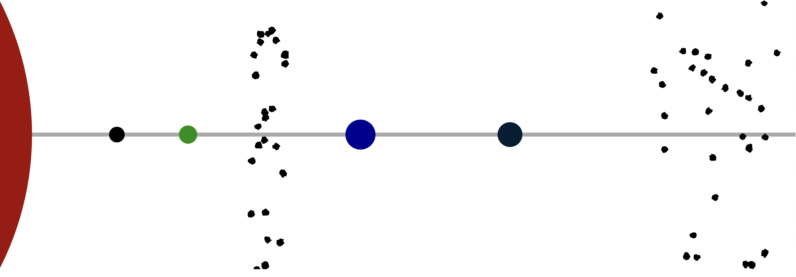
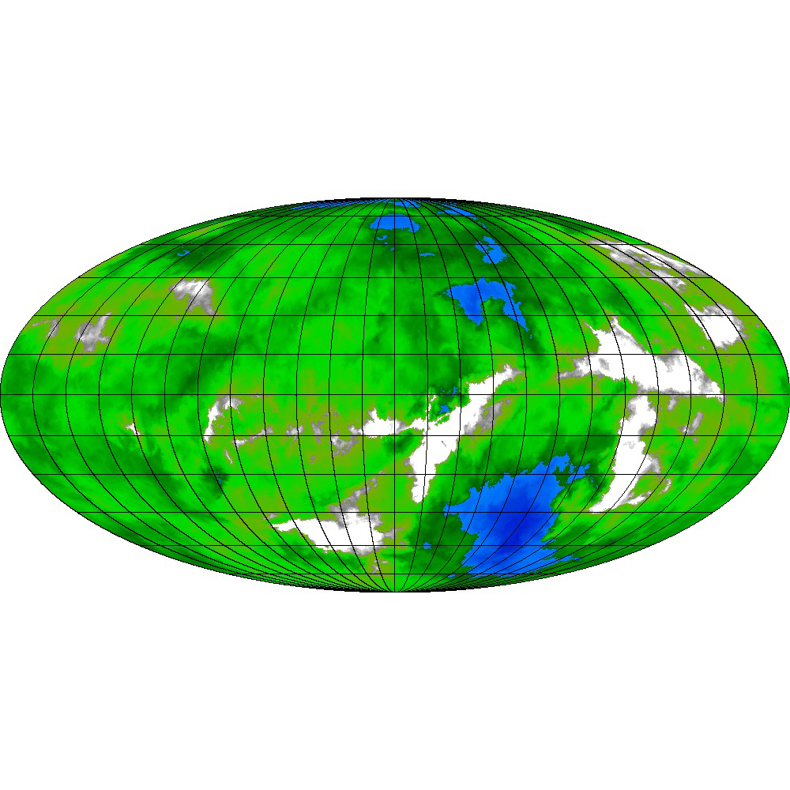
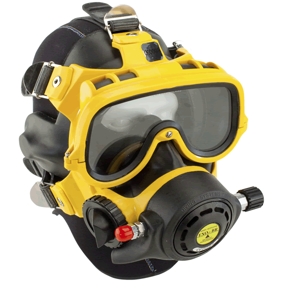
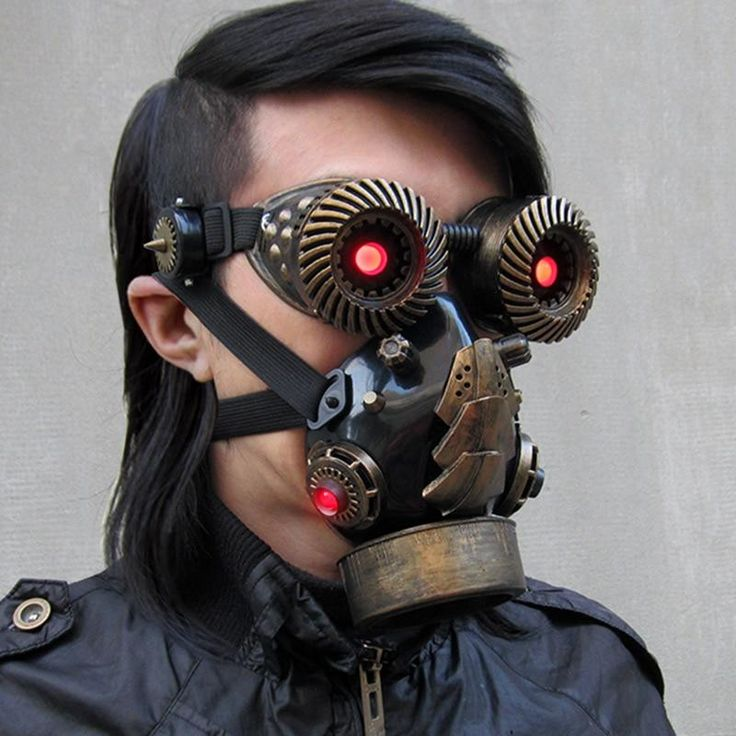
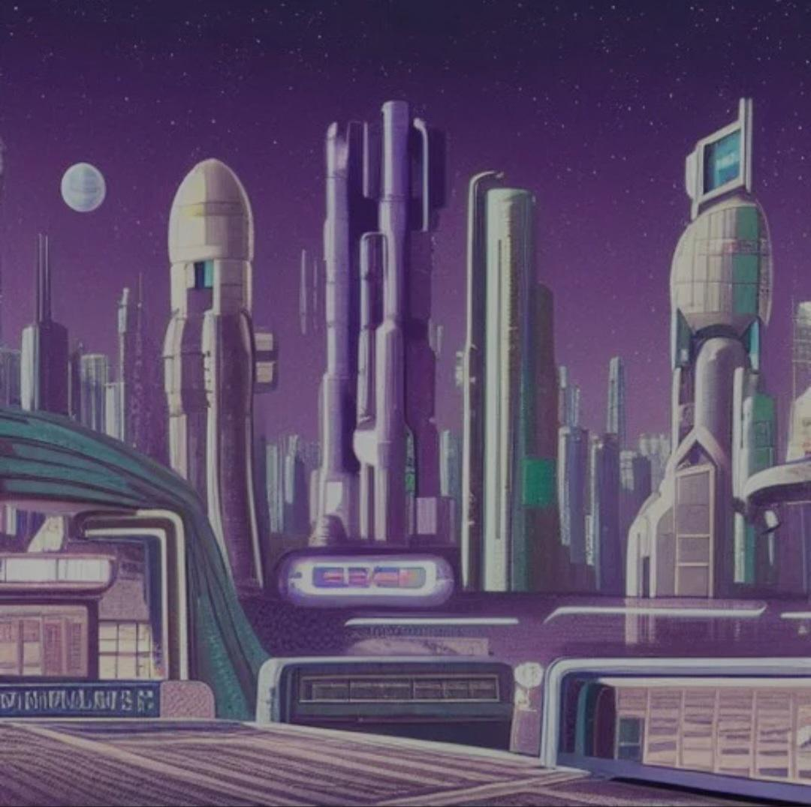

The Alula System
The Alula system is the “fortified gateway to Cicek space.” It consists of 4 rocky planets and 2 asteroid belts revolving around a double star.
Below is commonly-known information about the Alula system.
 Alula in cross section - created on https://tannerstephens.com/star-system-creator
Universal World Profile
Here is the corrected UWP for Alula.
Note that some sources list the population digit as “7” instead of “5”. This is a remnant of intentional misinformation during the war, published by the Cicek Confederacy’s propaganda wing. Ciceks who survived the war now consider it a sort of “inside joke”.
Alula BAA3770-C, Frozen (Xi Ursae Majoris ACd, Frozen, Cicek Confederation)
| Characteristic | Value | Description |
|---|---|---|
| Starport type | B | Good - refined fuel available, maintenance possible |
| World size | A | 17100km (1.6g) |
| Atmosphere | A | Exotic (Breather with air supply) |
| Hydrographics | 3 | Non-water fluid oceans cover 6% |
| Population | 5 | 780,000 Cicek / 40,000 Human / 20,000 Other |
| Government | 7 | Balkanized |
| Law Level | 0 | Lawless. All weapons allowed. |
| Tech level | 12 | |
| Classification | Fl, Ht | Non-water fluid oceans, High technology |
World name: Xi Ursae Majoris ACd
Nationality: Cicek Confederation
Scout base, navy base, no gas giants, two asteroid belts
 Alula’s double stars
Alula’s double stars
Background
From Terra Arisen:
Alula is a recent Cicek colony, first settled in 2238 as a fortified waystation on the “Cicek Run”. By the mid-2240’s it grew into a small border fortress and naval refueling station, though the Cicek never did establish a proper naval base there, just a smaller “scout” base. Initially deemed unappealing for settlements, the discovery of highly valuable complex compounds in Alula’s hydrocarbon-rich oceans drew enterprising Cicek tribes to harvest the chemicals and export them both to Cicek and Terran space. The world also remains an important spot on the Terra-Cicek trade route, though secondary in its importance to the more habitable Fei Lian. Typical for the Cicek, no real law exists beyond the tribal level and there are no restrictions on goods or armament. The Nine Fingers tribe operates the starport and stays neutral in the otherwise cutthroat – sometimes literally so – competition between the other four Cicek tribes on the world.
Migration
Alula went from “essentially unsettled” to a population of 780,000 (not counting non-Cicek) in only 22 years, between 2238 and 2360. The immigration rate averages around 3000 new arrivals every month, keeping a minor fleet of passenger liners busy, mostly Fairsky class (800 ton) transports.
Xi Ursae Majoris ACb
Rocky planet with no atmosphere or life, bathed in solar radiation
Xi Ursae Majoris ACc
Rocky planet with carbon dioxide rich atmosphere
Inner Asteroid Belt
Occupied by Long Tail Tribe, who have a cultural disgust and avoidance of Nine Fingers Tribe. It is rumored that there are pirates hiding out among the rocks. There are occasional unsubstantiated reports of precursor ruins that dot the rocks.
The inner asteroid belt lies between the 2nd and 3rd planets of the system.
Xi Ursae Majoris ACd - Alula - Main Planet
 Alula from space
Alula from space
 Alula satellite map
{kind=link}
(planet randomly generated from https://topps.diku.dk/torbenm/maps.msp)
Xi Ursae Majoris ACd, commonly called simply Alula, is a rocky planet with widely separated deep methane lakes. It is the primary world of the system, and home to the starport. It is the 3rd planet in the Alula system.
The atmosphere is “exotic”, made of methane, helium, hydrogen, and some other gases. Travel outdoors requires a “breather with air supply” and heavy clothing (ideally, warmed by battery power). These breathers come in two types.
The full size “standard breather” combines a face mask (similar to a scuba mask) and a pair of tanks that provide 6 hours of air. The breather assembly costs a mere Cr75, and the tanks can be refilled at any of thousands of shops for Cr20. It weighs 5 kg.
 Standard Breather (Terran model)
{kind=link}
More convenient is the “mini-breather” that has a more fashionable face mask and a single smaller tank that provides 1 hour of air. Mini-breathers come in a variety of colors and designs. They cost Cr100, but can be refilled at automated stations for Cr1. Mini-breathers only weigh 1 kg.
 One of this year’s most-fashionable mini-breathers, among the Terran minority
{kind=link}
There are representatives of all Alula’s tribes on the planet Alula, except for the Long Tail Tribe.
The Starport
Alula’s interstellar port is rated Type B, and there is both a “high port” and a “low port” here. The port is able to handle both streamlined and non-streamlined ships. By tradition and neutrality treaty, the Nine Fingers Tribe operates the starport.
Fuel refining operations on Alula are simple and easy, because several deep seas of mostly methane exist on the planet’s surface. The larger ones have extraction and refining facilities, and the refined fuel is then sold at the low port. The major Cicek tribes in the system also have their own private fuel depots at these refineries.
Alula High Port

Alula High Port was originally built under Reticulan control, but later upgraded with help from the Cicek’s Terran allies toward the end of the war.
Alula Low Port

Alula Low Port is the center of trade in the system, and the startown that has cropped up around the port is known in Terran as Prosperity City.
Prosperity City

Xi Ursae Majoris ACe
This is a rocky planet wracked by volcanoes.
Outer Asteroid Belt
Extremely wide band of asteroid that takes up multiple orbits. Astronomers believe this belt is much younger than the rest of the system, and represents three or even four planets that collided in the not-too-distant past.
There is some prospecting activity in the outer belt, which is much safer for travel than the inner belt.
Major Cicek Tribes Present
With 780,000 Cicek present in the Alula system, there are literally hundreds of tribes. Many tribes are affiliated or offshoots of other tribes, and the relationships are too complex for most humans to understand or take an interest in. But there are five “major” tribes here.
A major tribe is one that has its own starships, minor starports (repair stations), supply lines, and ability to project might into other systems. There are also minor tribes that have great power on a given planet (infantry, for example) but don’t have the ability to protect that planet from spacefaring attackers.
The power levels shown below are subjective ratings from the (admittedly human-centric) Explorer Society. Beware that power levels change all the time. Consult local conditions.
Nine Fingers Tribe
- operates the starport at Alula Borealis g
- power level: 2/6
Seven Spear Tribe
- owners of the Balanced Spear IX, the starship wrecked on Brahmagupta (Parvati system) decades ago
- power level: 6/6
- they do not have a presence on Parvati currently
Rain Tribe
- this is the tribe of Silvertail Stripe, assistant to the Cicek ambassador on Parvati
- power level: 3/6
Tree Clinging Tribe
- power level: 3/6
Long Tail Tribe
- inhabit the inner asteroid belt, known to act mostly as pirates preying on merchant activity (both Cicek and Terran)
- power level: 3/6
Minor Cicek Tribes Present
Blue Star Tribe
Primary Stronghold: Chukkahr
See here: https://toddbradley.github.io/terranborderlands/factions/allies-and-enemies/split-stone-tribe
Split Stone Tribe
Primary Stronghold: Bantion
See here: https://toddbradley.github.io/terranborderlands/factions/allies-and-enemies/blue-star-tribe